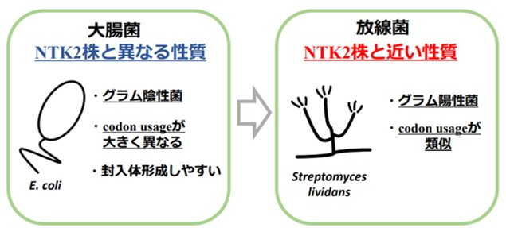
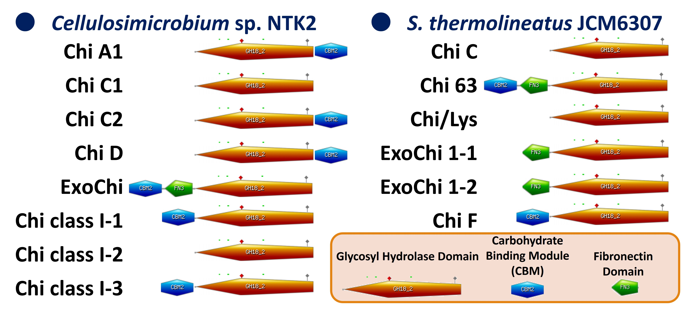
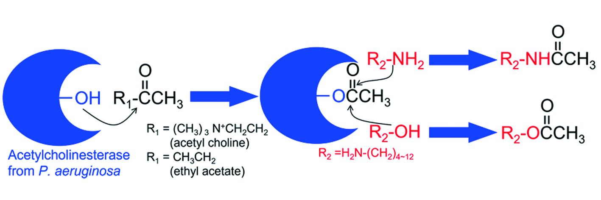

タンパク質は生命体の基本的な構成要素であり、多様な機能を果たしています。 お肉や豆腐などを想像しがちですが、タンパク質というのは細胞の構造を維持し、細部に必要な物質の運搬や神経などの信号伝達を行い、エネルギー生産等の化学反応を促進するなど、生命のほぼすべてのプロセスに関与しています。 特に、タンパク質の一種である酵素は、体の中の化学反応の触媒として働き、その反応速度を著しく向上させて潤滑に生活できる環境づくりの役割を果たします。 私達はこれらの中で、特に酵素の機能に着目しています。 酵素の機能は、特定の基質に対して高度に特異的な結合を行い、反応の活性化エネルギーを低下させることがしられています。 これによって、体の中でのエネルギー生産等の化学反応を促進します。 そして、これにより体内の代謝や身体づくり、DNA複製など、生命維持に必要な化学反応が効率的に進行します。 今後望まれる研究としては、以下のような分野が挙げられます。 これらの研究は、生命科学およびバイオテクノロジーの進展に大きく寄与し、持続可能な社会の実現に向けた重要なステップとなることが期待できます。
１．構造ー機能相関解明：立体構造を詳細に解析し、機能との関連性を理解し、その機能を人工的に制御する技術を開発
２．新規酵素の発見と設計：未発見の酵素や人工酵素を探索・設計し、産業や医療分野における新しい応用法を開発
３．安定性と機能向上：耐熱性／耐薬品性を高め、過酷な環境でも働くタンパク質を開発し、様々な産業プロセスに応用
４．医学的応用：病気の診断や治療への利用法の拡大と、実体そのものを利用した新しい治療法や診断技術を開発
私たちはこのような中で、微生物研究から得られる重要な形態や遺伝情報から、上の２と３の研究テーマに重点を置き、研究室のプロジェクトを進めています。 特に、未利用資源を利用することを目的とした研究からは、様々なタンパク質の利用可能性が示されており、未利用資源キチンの立役者となるかもしれない酵素が開発されるかもしれません。 他にも、様々な有用ジペプチドの簡易合成が可能なセリン加水分解酵素、そしてガラスに変わる新しい素材開発に適したシリカ形成促進タンパク質など、多岐にわたるタンパク質を対象に研究を進めています。
●未利用資源キチンの有効利用を志向した遺伝子工学・タンパク質工学的アプローチ
化石燃料の利用から生物資源を全面的に利用する社会への移行は責務であり、未利用生物資源を活用する研究開発は全世界で実施されています。 その中で鳥取大学では、日本で有数の水産県である鳥取県の水産未利用生物資源の利活用を通し、海洋資源に関するSDGsの実現化を目標とした「未利用生物資源活用研究センター」が設立されました。 本センターでは海藻や魚介類の廃棄部等を題材とし、機能・物性評価を通して水産未利用生物資源の魅力ある活用法の開発を目指しています。 その中で私は、カニ殻等の未利用資源キチンのユーザビリティを高めるべく、カニ殻を代表とする水産甲殻類廃棄物の主要成分であるキチンの活用研究を進めています。 以下にその研究の一例を示します。
１．放線菌由来キチン分解系タンパク質の恒常的生産 ～放線菌宿主ベクター系の構築と組換えタンパク質発現系への応用～
私達の微生物研究によって得られるキチン分解菌の多くは放線菌であり、放線菌自身が生きている限り、キチン分解系タンパク質は生産されます。 しかし、その微生物機能のみでは私達の最終ゴールである未利用資源の有効活用には、たどり着きません。 つまり微生物側は自ら生きるためにキチンを分解し、分解物を吸収し獲得しているのです。 ならば「別の有用物質の生産」も夢見ますが、未だキチンを材料に有用物質を生産してくれる微生物に出会えていません。 酵素の力を借りてキチンの分解を達成出来れば、全ての問題が解決します。 しかし放線菌の遺伝子はGC含量が多く、大腸菌によるタンパク質生産系では多くが封入体となり、機能を持つ組換えタンパク質の獲得が困難です（Fig. 1-1）。 そこで当研究室では、放線菌による組換えタンパク質の生産を恒常的に行うことが出来るよう、放線菌を使用した宿主ベクター系の構築を試みています。 本研究の実現により、多くの放線菌由来有用酵素の生産と応用法開発が進められると期待しています。

Fig. 1-1 放線菌由来遺伝子(NTK2株由来遺伝子)の発現における放線菌と大腸菌の組換えタンパク質発現における差
２．キチナーゼのドメイン構造とキチンの分解パターンとの関連
キチンの分解物は様々な生理活性を持ち、医療や食品分野で利用されているため、キチンは次世代バイオマス資源として注目されています。 一方で、キチンの分解には繁雑な工程や環境負荷等が問題とされていて、これらの問題解決のため、酵素による直接的な分解方法の開発が求められています。しかし、未だ実現に至った例は存在していません。 そのようなこともあり、私たちは様々なアプローチから酵素によるキチン分解の実現を現実にするべく、研究を進めています。
そのような背景のもと、本研究ではキチナーゼの多様なドメイン構造が機能とどのようにつながっているのかについて追及しています。 キチナーゼにはGlycoside Hydrolase (GH) family 18というグループと、GH family 19というグループに分けられます。 私達の研究対象には、どちらのグループに属する酵素も多数保有しており、それぞれのドメイン構造も異なっています。 ドメインにはキチナーゼの機能の中心となる活性ドメインに加え、Carbohydrate Binding Module (CBM)というドメインやFibronectinと呼ばれるドメインがあり、酵素によってあったりなかったり、前についていたり後ろについていたりという多種多様な構造が観察されました（Fig. 1-2）。 本研究の中で、GH19に属する酵素について、CBMの有無が及ぼす機能への影響について調べられました。 この研究によると、CBMというドメインは水に溶けない多糖への吸着に貢献し、酵素機能を上げているという結論に至りました（Fig. 1-3）。 この研究の他にも、様々なキチナーゼを対象としたドメイン構造に関係する研究を進めています。

Fig. 1-2 放線菌由来キチナーゼの様々なドメイン構造

Fig. 1-3 ドメイン構造の入れ替えによるキチナーゼ機能の変化
●セリン加水分解酵素の「副反応」を利用した有用物質合成
セリン加水分解酵素の本来の機能は加水分解の触媒ですが、その誤作動として「アミノリシス」と呼ばれる転移反応を触媒します。 この転移反応による生成物は多様であるため、本機能を利用して、様々なペプチドや機能物質の合成に挑戦しています。 これまでに、放線菌由来の酵素を利用して、食肉から抽出される筋肉成分“イミダゾールジペプチド”や、農薬のリード化合物であるジケトピペラジン類、ジペプチド骨格を持つ甘味料や沈痛ジペプチドの合成を実現しました（Fig. 2-1）。 現在は、緑膿菌由来の酵素を利用して、様々なアセチル化物質の合成、そしてジペプチド以上のペプチドを繋げあわせるようなペプチドライゲーションにもチャレンジしています。 以下に現在の取組みについて紹介します。
Fig. 2-1 セリン加水分解酵素の1つ、ペプチド分解酵素によるペプチド合成
１．D-アミノ酸アミド加水分解酵素によるジペプチドライゲーション
D-アミノ酸アミド加水分解酵素(DAH)は、Ser ペプチダーゼに属した酵素で副反応「アミノリシス」を示します。この誤作動によりアミノ酸からペプチドが合成されることになるのですが、DAHは基質特異性が広く、D-アミノ酸も認識可能なので、D体を含める様々なペプチドの生産ツールとしての利用に期待がかかります。 本酵素はすでに立体構造も解明され、そのアミノリシスにおける反応機構についても深く洞察され、様々な機能が変わった変異酵素も構築されています（Fig. 2-2）。 するとDAHはペプチド合成の際に認識するアミノ酸に代わってジペプチドも認識してアミノリシスを触媒できることが判明しました（Fig. 2-3）。 この特徴を活かして、DAHをジペプチドライゲーション触媒ツールとして利用が可能であるか評価を行っているとともに、このジペプチドライゲーションを活用した機能性ペプチドの合成にチャレンジをしています。

Fig. 2-2 DAHによるアミノリシス反応機構の洞察
Fig. 2-3 DAHによるジペプチドライゲーション
２．微生物アセチルコリンエステラーゼによるアセチル化反応と応用
緑膿菌 Pseudomonasu aeruginosa PAO1のゲノム中に存在するアセチルコリンエステラーゼ（AChE）も、活性部位にSer残基を持つセリン加水分解酵素に属します。 AChEは、アミノリシスに加えアルコリシス機能も有しているため、アミド化に加えエステル化反応も触媒可能な酵素であることが分かりました。これまでに、アセチルコリンや酢酸エチルをアセチル化の材料として、様々なアミンや水酸基を持つ化合物のアセチル化が可能であることが証明されました（Fig. 2-4）。今後の展開として、アミノ酸やアミノ糖など、様々な生体物質のアセチル化反応による有用物質生産への応用が期待できます。

Fig. 2-4 AChEによるアミノリシスとアルコリシスの反応過程
●シリカ形成タンパク質の機能を軸とした新技術の開発
様々な酵素が産業や生活に役立っていますが、その多くが非常に高価で再利用が望まれています。 また、センサーなどでは、酵素反応を特定の場所で行う必要があります。 しかし酵素による反応を特定の場所で行い、使用後に回収して再利用するには酵素の固定化が必要です。 私たちはこれまでに、ガラスカイメンのシリカ骨格からグラシンというシリカ形成タンパク質を見出しました。 このタンパク質はシリカに強く吸着し、ケイ酸からシリカを形成します。 この機能を利用して、これまでにGSTという酵素のシリカへの固定化に成功し、酵素機能を持つガラスの構築が実現しました（Fig. 3-1）。 この技術はリアクターや分析・診断に利用可能なセンサーへの応用に繋げることが可能である他、ガラス代替材料や物性改善、新奇複合材料の応用・開発にも期待されます。
Fig. 3-1 ガラスカイメン・カイロウドウケツから見出されたシリカ形成タンパク質と、その機能による酵素の固定化
タンパク質の研究は微生物とは異なり、「データ収集のための機器分析」と、「“精製”というサンプル調製上での難易度が高い技術」が要求されます。 精製については、遺伝子組換えやタンパク質工学技術が取り入れられたノウハウが確立されつつありますが、分析からの情報収集については、定量／定性の基本知識が必須事項です。 ですので、有馬研に入った際にはまずはこの考え方と技術について、2か月かけてトレーニングします。 一方で、実験自体は数分～数時間で終わるものが多く、生物を相手とした実験ではないので、時間の融通もコントロールできるため、タイムマネジメント的には容易なプロジェクトとなります。
おさえておくポイント
・専門性が高い技術・知識・スキルであり、より現代サイエンスの発展に寄与できる発見・発明に繋がるもの（ポータブルスキルではない）
・性質をとらえられるかどうかが勝負！ 間違った手法でとった情報は全て間違った情報！
・ITスキルをどう活かすか？ 酵素反応は化学反応なので、世の中の化学反応をコントロールしたITサービスをどう使いこなすかが今後の効率化に重要

有馬研究室では、自然界からの有用微生物の探索・機能解析や構造解析によるタンパク質・酵素の全容・酵素・微生物機能を使った様々なモノや現象に対する付加価値の付与に向けた研究しています。また、有用微生物の探索では、鳥取県の需要に合わせて水産業に特化した課題と、グローバルな思考のテーマを組み合わせたグローカルな研究を目指しています。